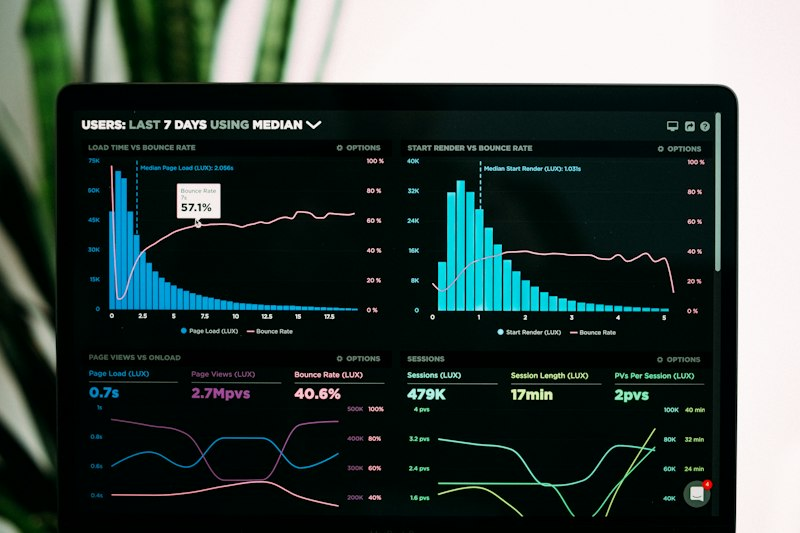

Work
Featured Projects

Cyber Threat Intelligence Dashboard
A Power BI dashboard analyzing 3,000 global cybersecurity incidents across 12 countries (2015–2024), surfacing attack patterns, financial impact, and industry vulnerabilities.
- 9 custom DAX measures for risk & impact KPIs
- 4-page dashboard: overview, attack analysis, impact & response
- Geographic + industry cross-tab drilldowns
- Key finding: Man-in-the-Middle attacks most frequent, costliest
Cybercrime Motive Analysis — India 2013
End-to-end analysis of cybercrime patterns across 35 Indian states/UTs using open government data, combining EDA with regression and classification models.
- 12 visualizations: heatmaps, feature importance, model comparison
- Random Forest regressor for predicting total crimes per state
- Logistic Regression classifier — 86% accuracy (high vs low crime state)
- Key finding: Fraud/Illegal Gain most influential motive

Cardiac Risk Monitor
A Flask web app that predicts heart disease risk from 13 patient vitals, trained and automatically selecting the best of three models on the Cleveland heart disease dataset.
- Compares Logistic Regression, Random Forest, XGBoost by ROC-AUC
- Random Forest selected — 82% accuracy, 0.908 ROC-AUC
- Instant, no-reload predictions from a 13-field clinical form
- Deployed live on Render
Exam Score Predictor
A linear regression model trained on 6,606 real student records, wrapped in a chalkboard-themed web app that grades a student's likely exam score on the spot.
- R² of 82.5%, average error of ±0.42 points
- 19-feature pipeline: study habits, attendance, motivation, peer influence
- scikit-learn ColumnTransformer + LinearRegression pipeline
- Deployed live on both Render and Vercel

AgentIQ Zero-Trust SOC
An enterprise-grade Zero-Trust SOC command center built for the TransOrg AgentIQ Datathon, correlating IAM, endpoint, and firewall telemetry to surface insider threats.
- Automated data-rescue pipeline cleaning 60K+ raw log rows
- Star-schema data model with cross-system correlation engine
- Explainable 0–100 multi-vector risk scoring across 4 signals
- Bonus: Llama-3-powered natural-language-to-chart AI agent

Vehicle Detection & Fine-Grained Classification
A two-stage computer vision pipeline that finds vehicles in an image with YOLOv8, then identifies the exact make, model, and year with a fine-tuned ResNet50.
- 196-class classification on the Stanford Cars dataset
- 83.86% top-1 / 96.84% top-5 accuracy
- Grad-CAM interpretability confirms model focuses on grilles/headlights
- Deployed live on Streamlit Community Cloud